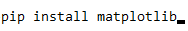
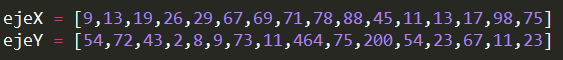
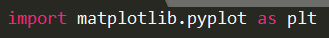
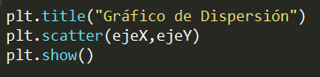
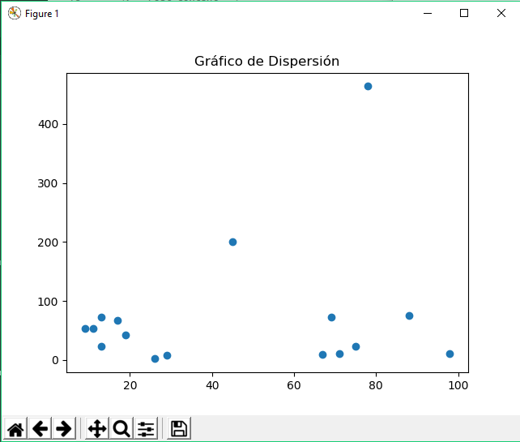
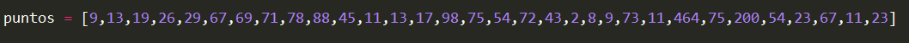
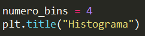
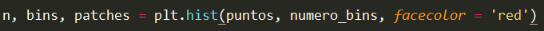
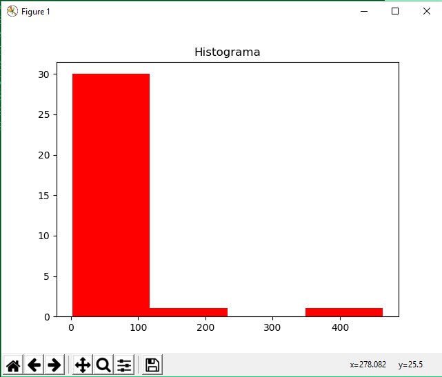

Matplotlib es una librería para Python que nos permite realizar gráficos de manera muy sencilla y rápida. Aquí te mostraré como realizar un Histograma y un Gráfico de Dispersión con esta maravillosa librería.
Como todo en Python, instalar Matplotlib es muy sencillo, solo ejecuta el siguiente comando en tu consola o terminal:
Ahora solo espera que termine de instalar y eso sería todo, ahora podemos empezar a crear nuestros gráficos.
Gráfico de dispersión
Un gráfico de dispersión es aquel que muestra la relación entre dos conjuntos de datos, como la relación entre talla y edad, por dar un ejemplo. Veamos cómo podemos dibujar un gráfico de dispersión utilizando matplotlib.
Supongamos que tenemos los siguientes puntos, los cuales deseamos colocarlos en nuestro gráfico:
Entonces, lo primero sería importar matplotlib:
Finalmente utilizamos la función scatter a la cual le pasamos por parámetros los puntos que deseamos pintar,con la función title le colocamos un título al gráfico y finalmente utilizando la funcion show nuestro gráfico será visible.
Al ejecutar nuestro script saldrá el siguiente gráfico:
Histograma
Un histograma es aquel que muestra la frecuencia de los datos utilizando barras, donde los números son agrupados en rangos. En otras palabras, la frecuencia de cada elemento en la lista se mostrará utilizando histogramas. Los números agrupados en los rangos se llaman bins.
Supongamos que tenemos los siguientes puntos, los cuales deseamos colocarlos en nuestro gráfico:
El número de agrupaciones o bins será de 4 y tendrá por título Histograma.

En este caso no usaremos la función scatter, sino la función hist de la siguiente manera:

Agregamos la función show como en el gráfico anterior, luego, al ejecutar nuestro script saldrá el siguiente gráfico:
Como vez hacer estos dos gráficos ha sido muy sencillo, de esta manera es como matplotlib nos facilita el trabajo con gráficos. En próximos post veremos mas ejemplos con esta librería.